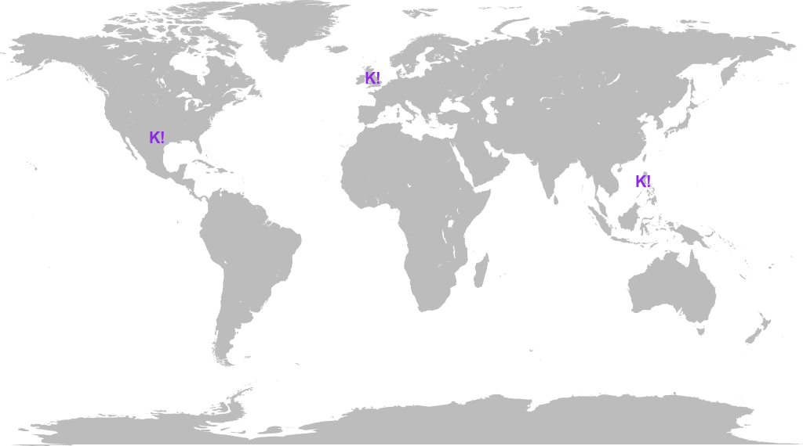

The customer support team is the first one to be faced with customer issues, feature requests,
and problems with the product.
How To Support
By adminiting there is a problem
By showing empathy
By being honnest
Great Support
Provide solutions not excuses
Go the extra mile
Going global
Trust is the only way you can support people 24/7
Support 24H a day

Support 7 days
A primary contact / backup contact system.
At least in 2/3 of the geography involved.
Some rotation to avoid burnout.
A team effort
Using support as a way to get everyone involve in the product life.
The right tool for the right job
It's not about the tool.
Simple yet powerful
Everyone in the team should be able to use it.
A central tool
A good tool is always used.
A connected tool
A good tool has multiple usage.
Policies, Procedures, Processes
What supports do needs to be written down, explicitly
Accountability
People needs support during their day
Transparency
It is eaiser to explain when people already know
Consistency
All problems are important, some are more important than others
Feedback loop
Support is the begining and the end of the feedback loop
Model the path
User needs time to understand it all
Model the experience
No one is born all knowing
Top 10
Until people stop interacting with us.
Conclusion
With a bit of care, a global team, a central tool, a simple workflow, a few rule, some models
we can help Kahoot!ers and learn something along the way.